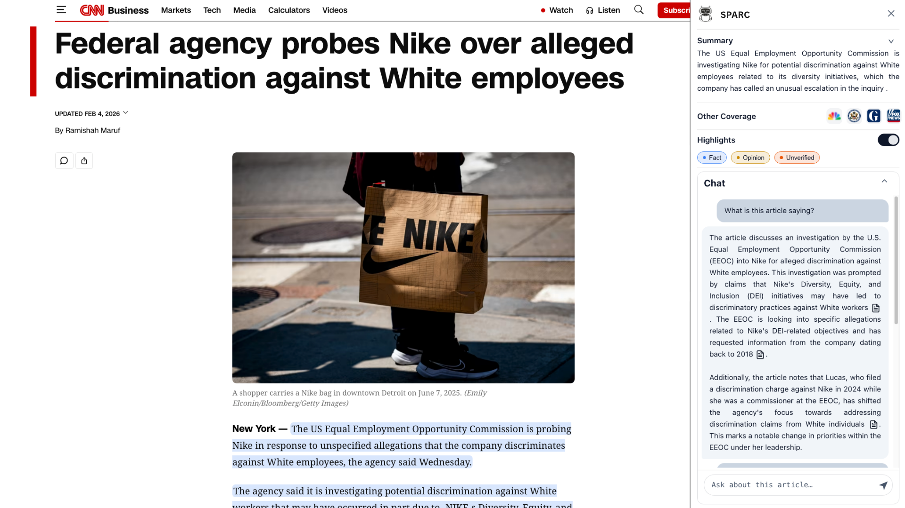

SPARC: Exploring Interaction, Sensemaking, and Engagement in AI-Augmented News Reading
CUI 2026 · ACM Conference on Conversational User Interfaces · Full paper
A browser extension that adds a conversational assistant, fact/opinion highlights, other outlets' coverage and summaries to news articles, evaluated with 172 readers.
Abstract
Recent advancements in AI assistants have sparked growing interest in how they can support everyday reading tasks. However, how AI can help readers deeply engage with online news articles remains underexplored. To understand online news readers' needs and how AI can support them, we conducted a formative survey (N=100), in which participants expressed the desire for credible, accurate information, exposure to diverse perspectives, and low-friction assistance that augments reading flow. In response, we designed and developed SPARC, a web extension that enables readers to assess article credibility, find relevant information, and explore others' perspectives through conversations and visual cues. A user study (N=172) with Fox and CNN readers suggests that SPARC helped participants with comprehension and information-seeking through conversational explanations, and enabled focused attention by providing highlights as a reading scaffold. We also found that participants' pre-existing positive or negative perception of trust in AI did not significantly influence their engagement with our tool.